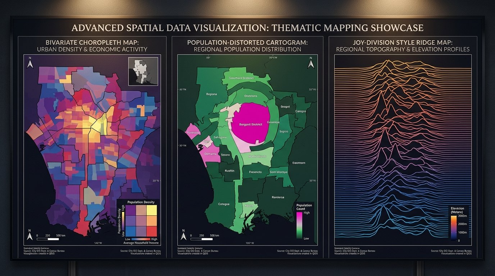
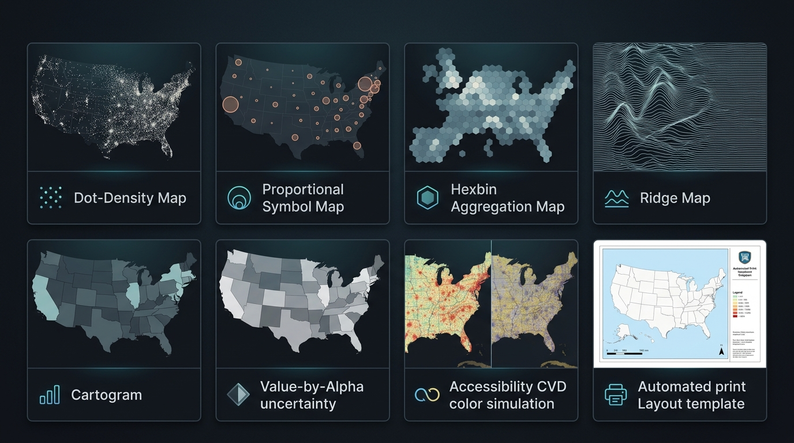
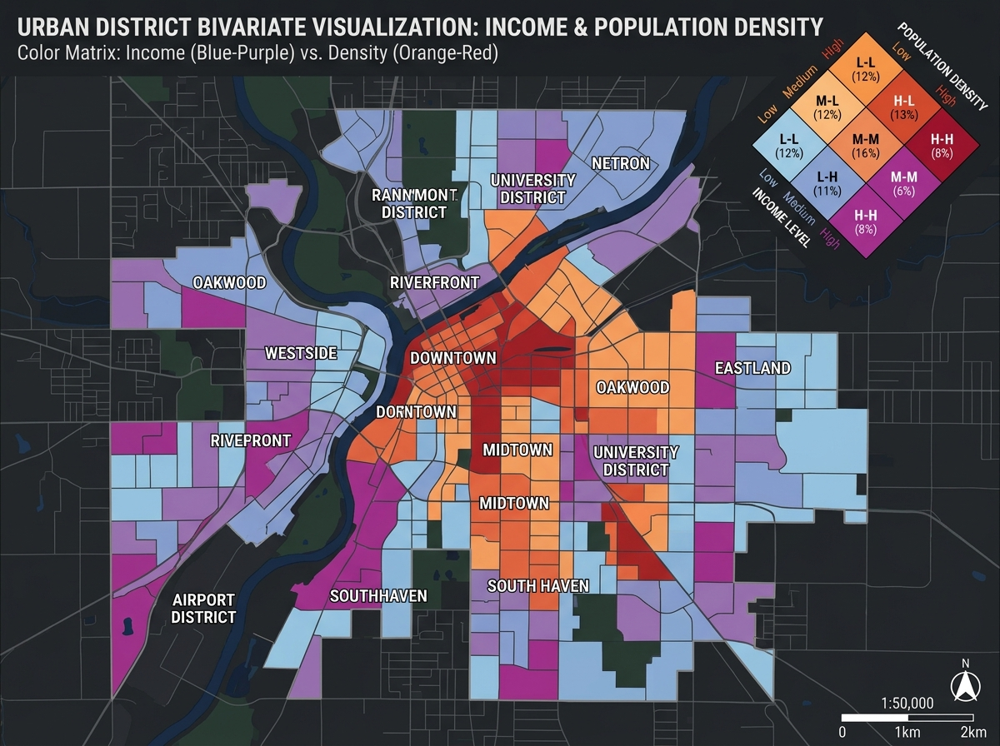
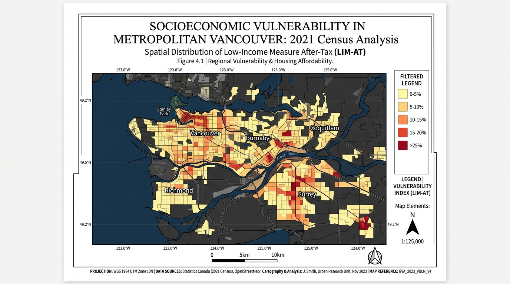

Bivariate choropleths, cartograms, ridge maps, dot-density, 2.5D buildings, Value-by-Alpha, and automated print layouts — as native QGIS styling, not fragile pasted QML. No pip dependencies.
02CartoLab is a unified thematic mapping and print layout automation studio for QGIS. It bridges map symbology and publication print layouts in one cohesive workflow: builds publication-ready choropleths (including bivariate and Value-by-Alpha), continuous-area cartograms, ridge-line relief maps, dot-density, proportional-symbol maps, and hexbin aggregation — then assembles complete print layouts in one click.
Built for planners, urban researchers, studios and academic cartography workflows. Includes a CVD accessibility inspector, Layout Designer studio dock, and 14 headless Processing algorithms. No external dependencies — pure QGIS.
Search terms on the QGIS Plugin Hub:
A complete cartographic toolbox — from advanced thematic styling to one-click print layout generation, all within native QGIS.
3×3 and 4×4 color matrices encoding two simultaneous variables. Value-by-Alpha fades unreliable values instead of hiding them. Diamond/square legend decorators included.
Gastner-Newman topology-preserving cartograms that distort polygon shapes proportionally to a value field. Maintains contiguous boundaries and neighbor relationships.
Transform any raster (DEM, heat maps, density, accessibility) into stacked Joy-Division-style ridge-line profiles. Dramatic topographic storytelling from any grid surface.
Auto Map Sheet builds a complete publication layout from the current view: titled frame, filtered legend, scale bar, north arrow, coordinate graticule, and credits — in one click.
5-mode Color Vision Deficiency simulation: Normal, Deuteranopia, Protanopia, Tritanopia, Achromatopsia. Real-time WCAG 2.1 AAA contrast scoring for accessible maps.
Seeded, hole-aware dot placement inside polygons (one dot = N units). Pointy-top hexbin aggregation with count/sum/mean — overplot-free density cartography at any scale.
Native QGIS 2.5D renderer with height/floor-field extrusion, 10 material presets, shadows, directional shading, stepped floor bands, per-floor colors and QML export.
Report Figure (16:9), Academic Journal (A4 2-col), Exhibition Poster (A1/A2), Fact Sheet, and Comparative Diptych — each with calibrated margins, typography and grid.
Geometric Interval, Fisher-Jenks and Head/Tail Breaks for skewed urban data. One-step normalization: rates per capita, z-score, robust MAD-z, percentile rank, log.
Every module is reachable from the 02CartoLab Dashboard and the Processing Toolbox — scriptable, composable, modeler-ready.

| Module | What it does | Surface |
|---|---|---|
| Quick Style | One-click graduated or categorized renderer with ColorBrewer + viridis palettes and live preview | Dashboard Processing |
| Colour Palettes & CVD | 24+ ramps with 5-mode CVD simulation and WCAG 2.1 AAA contrast scoring | Dashboard |
| 2.5D Building Styling | Floor extrusion, presets, shadows, per-floor bands, QML export | Dashboard Processing |
| Bivariate Choropleth | 3×3 / 4×4 color matrices, custom corners, diamond/square legends | Processing Layout |
| Value-by-Alpha | Value → hue, reliability → opacity — reliability-aware visualization | Processing |
| Cartogram | Continuous-area distortion (Gastner-Newman) proportional to a value field | Processing |
| Ridge Map | Raster surface → stacked joy-division ridge lines | Processing |
| Adaptive Classification | Geometric Interval, Fisher-Jenks, Head/Tail Breaks | Processing |
| Dot-Density Map | Seeded, hole-aware dots inside polygons — one dot per N units | Processing |
| Proportional Symbols | Flannery-compensated graduated point symbols with nested-legend values | Processing |
| Hexbin Aggregation | Pointy-top hex grid — count / sum / mean, overplot-free | Processing |
| Visual-Center Labels | Pole-of-inaccessibility (polylabel) anchors always inside the polygon | Processing |
| Graticule / Reference Grid | Meridians & parallels on nice intervals with coordinate labels | Processing |
| Normalization & Rates | Rate, z-score, robust z, min-max, percentile rank, log — prep before classifying | Processing |
| Layout Template Gallery | 5 publication archetypes: Report Figure, Academic Journal, Exhibition Poster, Fact Sheet, Diptych | Layout Studio |
| Auto Map Sheet | Complete print layout from current view — map, legend, scalebar, north arrow, grid, credits | Layout Studio |
Encode income & density, vulnerability & exposure, or any two urban indicators simultaneously — with a 3×3 color matrix legend that tells both stories at once.

Auto Map Sheet builds a finished layout from the current QGIS view. Five publication archetypes cover every output format from academic journals to exhibition posters.

Release verification runs on both QGIS LTR and the current stable release. Zero external dependencies means zero install friction.
Open QGIS → Plugins → Manage and Install Plugins → Search 0202CartoLab → Install.
Download the latest release ZIP from GitHub → Plugins → Install from ZIP → select the file.
Clone the repository and set QGIS_PLUGINPATH to the parent directory. Access via Plugins → 02CartoLab Dashboard.